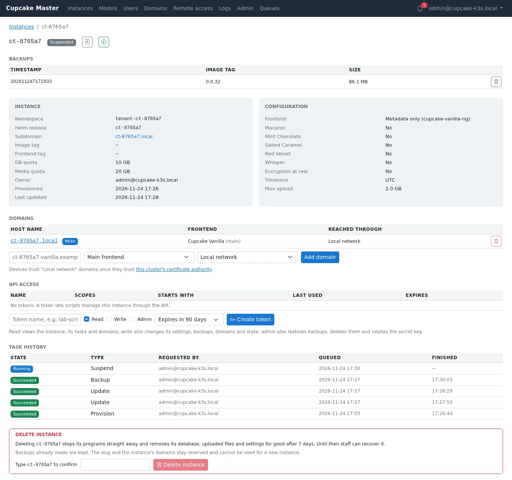
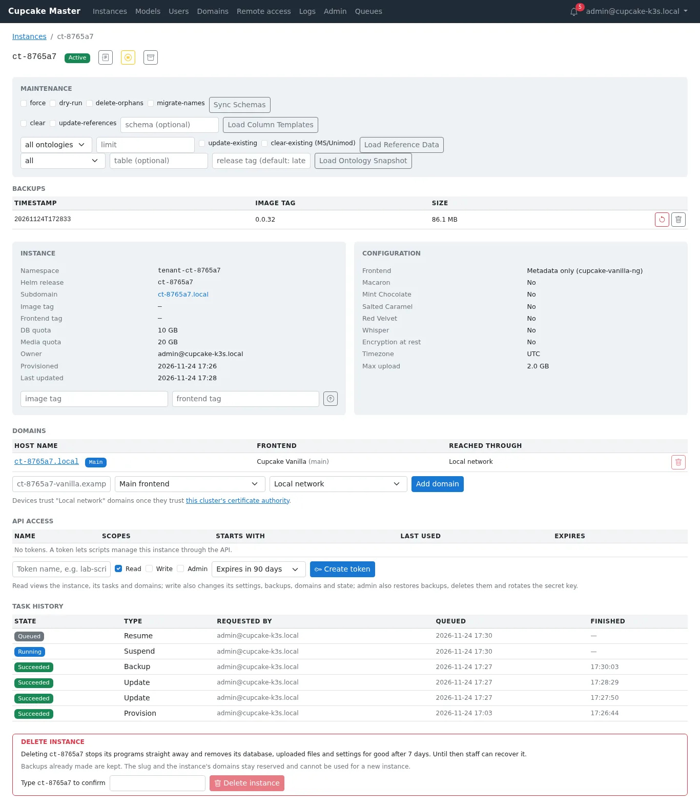
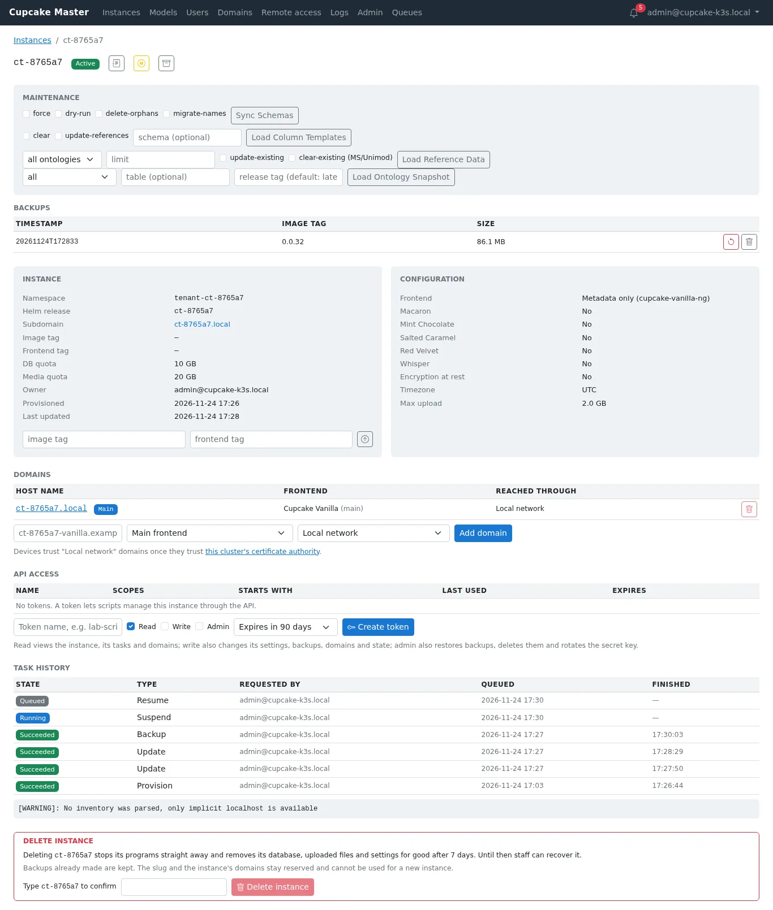
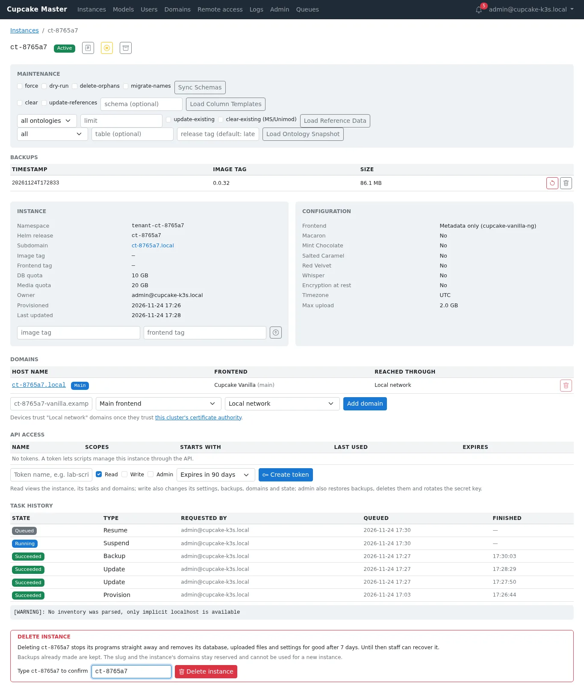
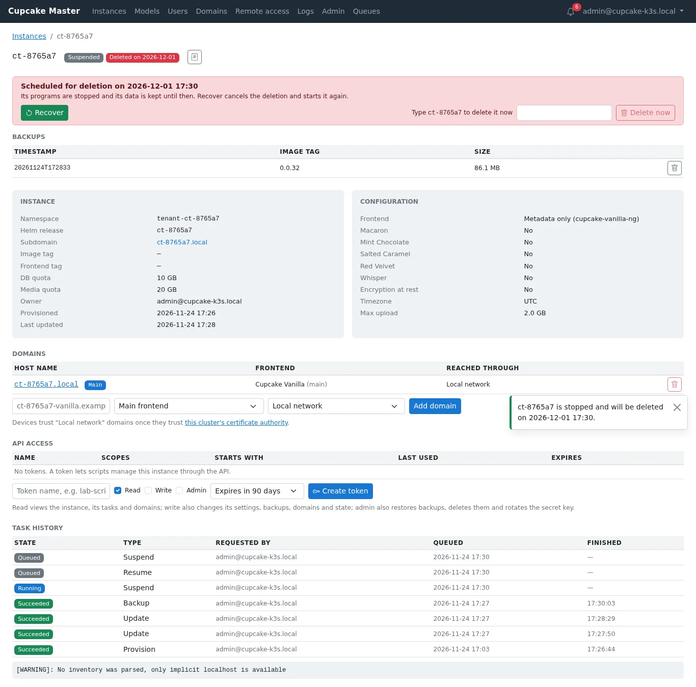
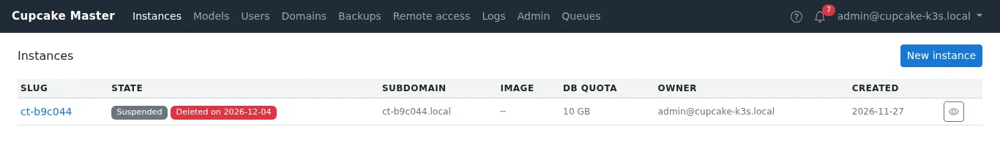
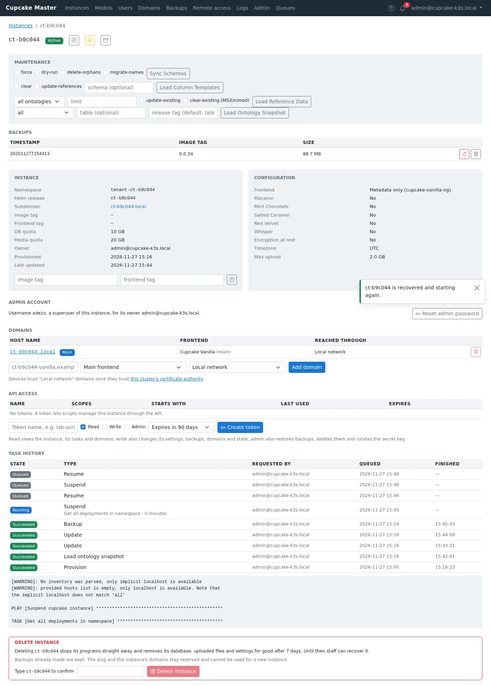
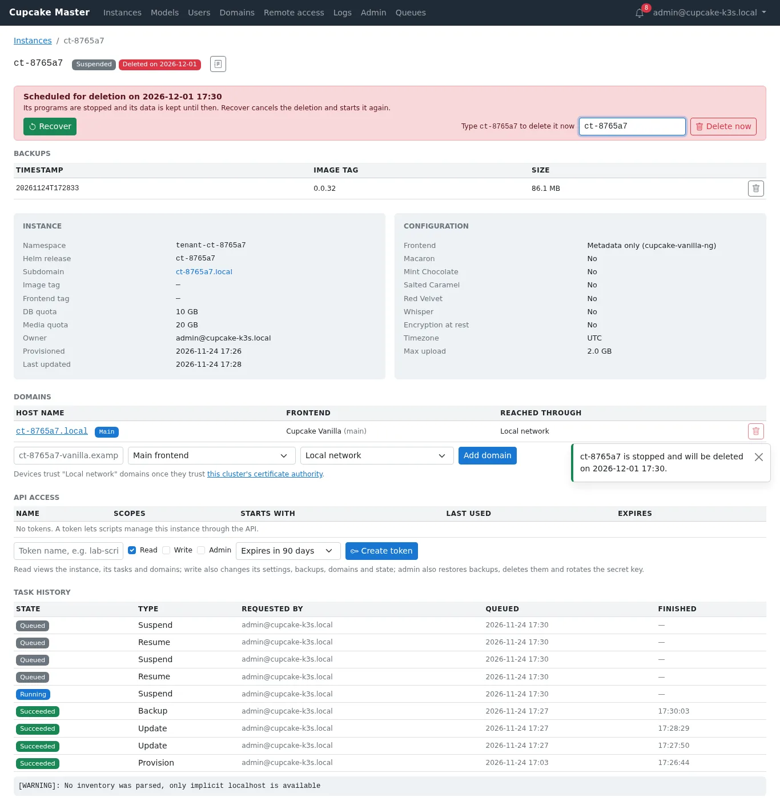
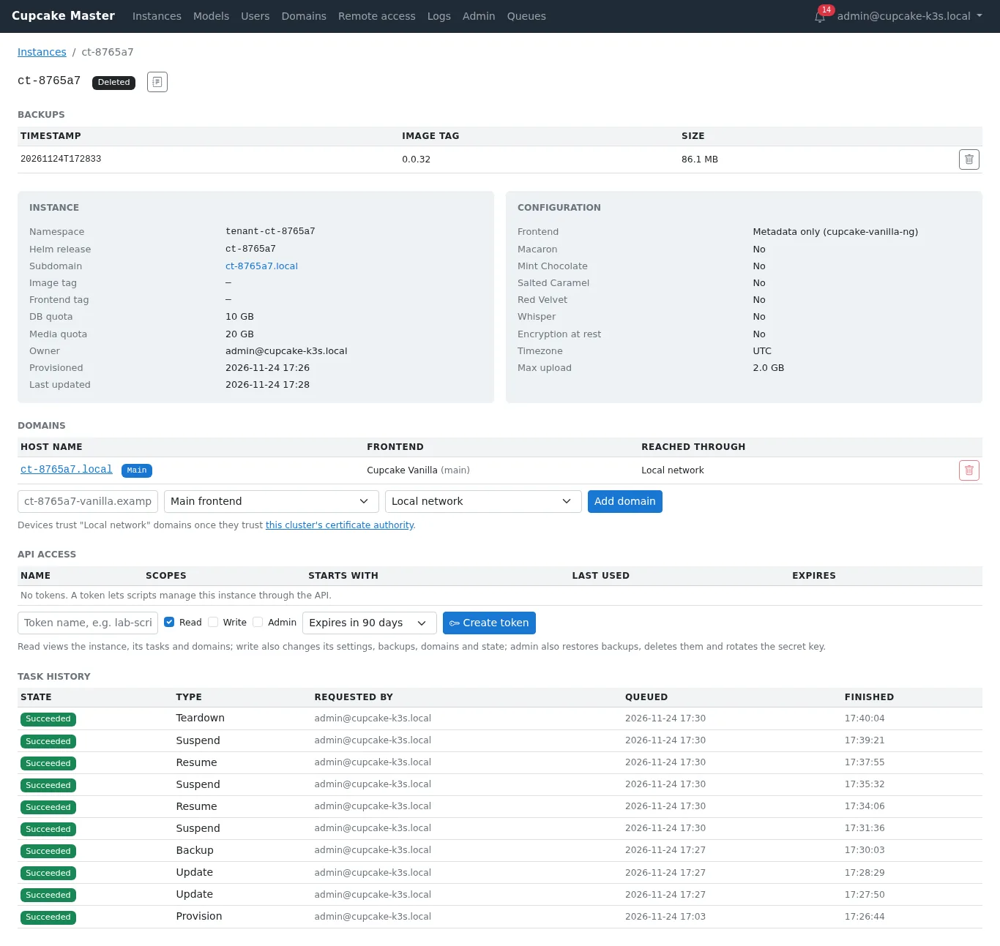

Suspend and resume
Suspend stops an instance's programs but keeps its data. Confirm when asked.

A suspended instance shows Resume instead.

Resume starts it again; it is active once its programs answer.

Deleting an instance
Only staff can delete an instance. Delete instance is at the bottom of its page and says what is removed and when.

Type the instance's slug to confirm; the button only works once it matches.

The instance is stopped at once and kept for 7 days. Its owner is told the date.


Backups already made are kept. The slug and the instance's domains stay reserved.
Recovering a deleted instance
Until the date shown, staff can choose Recover, which cancels the deletion and starts the instance again. Its owner cannot resume it while it is waiting to be deleted.

Deleting at once
To delete without waiting, type the slug again under the date and choose Delete now.

Once deleted, its programs, database and files are gone; the page keeps its history.
